Steering/Suspension - 2013 Model Year Alignment Specs.
GROUPCHASSIS
DATE
JANUARY 2013
NUMBER
13-SS-001
MODEL(S)
ALL
SUBJECT
ALIGNMENT SPECIFICATIONS - 2013MY
Description:
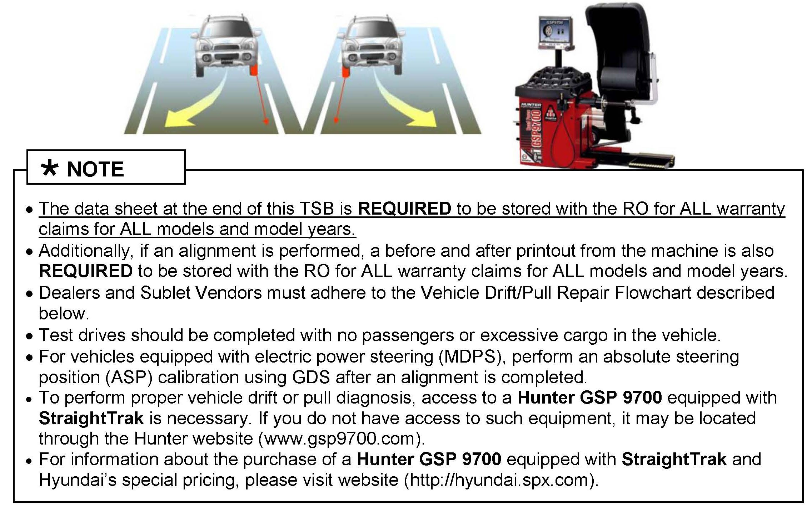
This bulletin provides the 2013 model year alignment specifications.
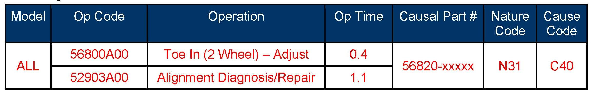
Warranty Information:
For all vehicle drift, pull and/or alignment warranty claims, the Vehicle Drift/Pull Data Sheet must be filled out as completely as possible and attached to the repair order.
If an alignment is performed, the alignment data sheet showing before and after measurements must also be attached to the repair order, and included in the technician's comment section of the warranty claim.
NOTE
^ When a vehicle is received with a drift/pull condition the service writer should document the customer comments using the Vehicle Drift or Pull Data Sheet.
^ Many issues can contribute to vehicle drift or pull, such as tire pressure, tire uniformity, wheel alignment, brake drag, road crown, cross winds, spring sag resulting in ride height differences. cargo load/weight distribution, and more.
^ It is important to consider all potential effects when diagnosing and confirming a vehicle drift or pull condition.
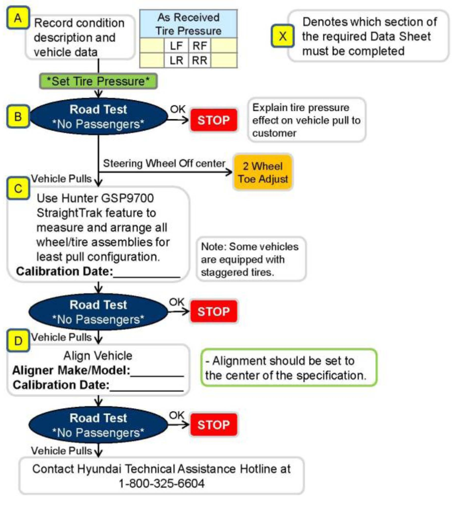
Drift/Pull Diagnosis and Repair Workflow.
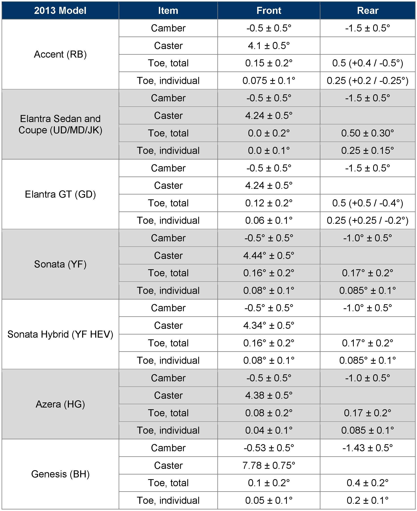
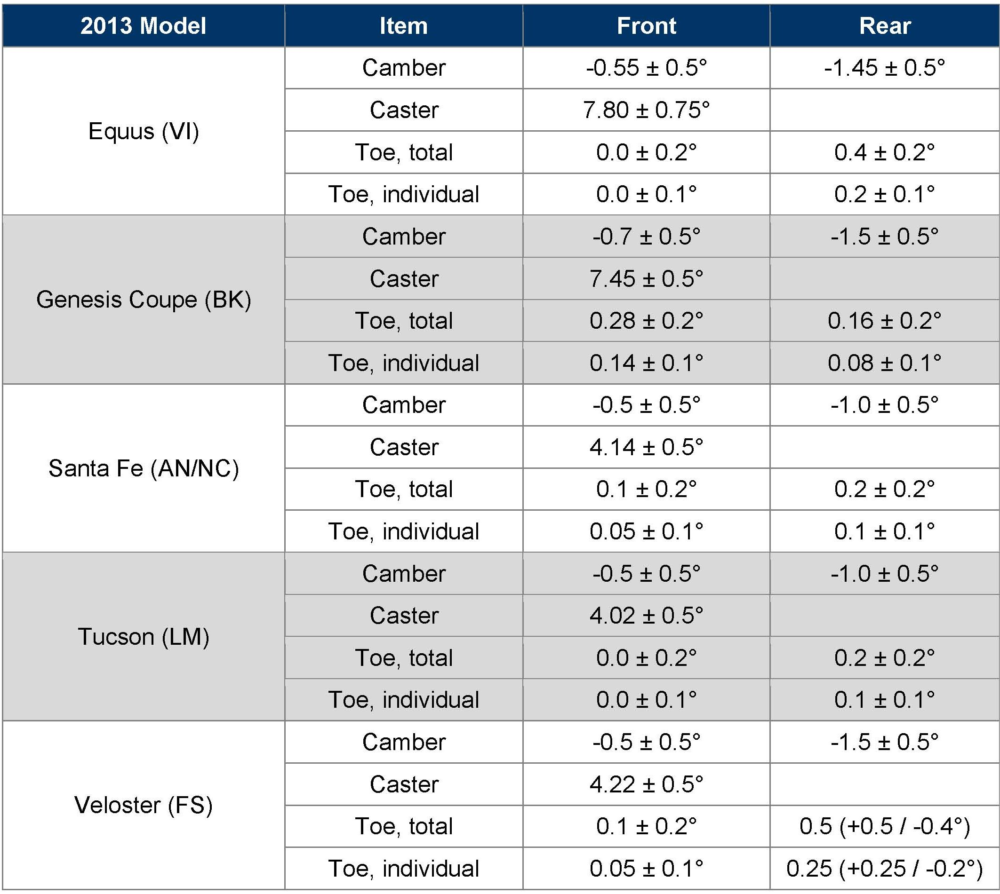
Alignment Specifications
Vehicle Drift/Pull Test Procedure
NOTE
Perform road testing with no passengers (driver only) and without carrying excessive weight.
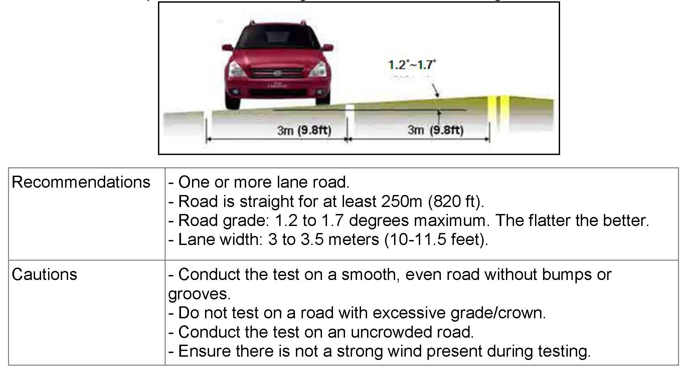
1. Locate an acceptable road for testing which meets the following criteria:
2. Before test driving, verify that all tires are OEM, correctly installed (directional tires, correct placement for staggered sizes, etc) and set to the correct inflation pressure.
NOTE
For the best accuracy, it is recommended to use the GDS to measure tire pressures under Current Data within TPMS system.
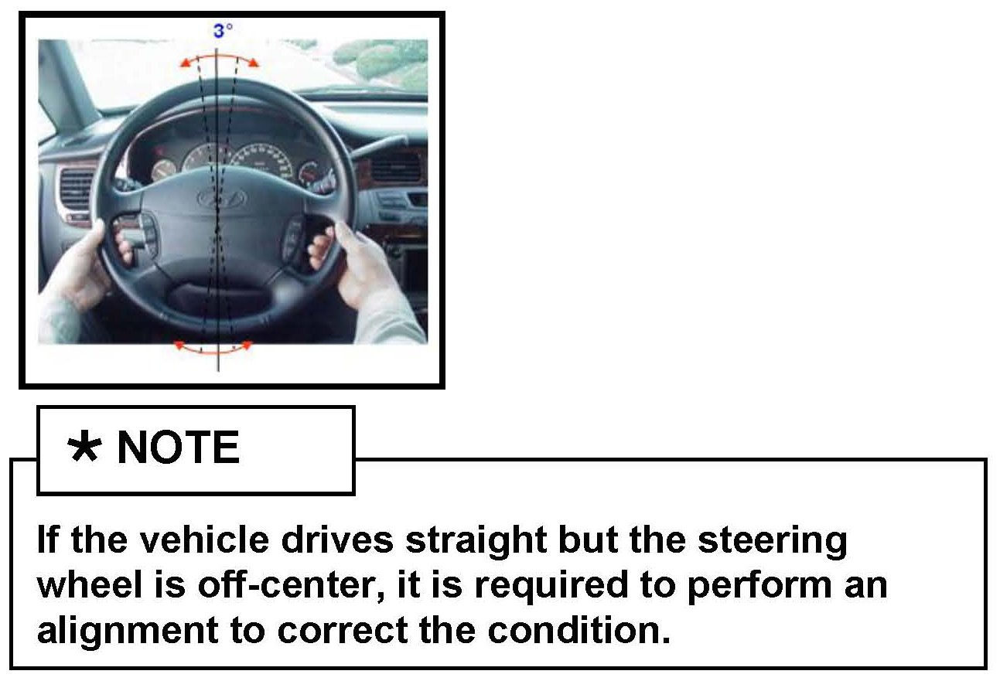
3. Approach the test road section and drive through at 40 MPH. Center the steering wheel, then slightly turn (~3 degrees) it to the left and to the right to get a feel for the steering center. Hold the steering wheel with a light touch on center.
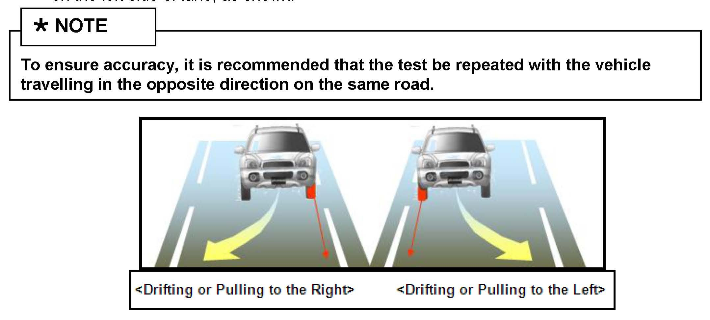
4. Note which direction the vehicle has a tendency to drift towards. If the vehicle tends to go left, place the vehicle on the right side of the lane. If the vehicle tends to go right, place the vehicle on the left side of lane, as shown.
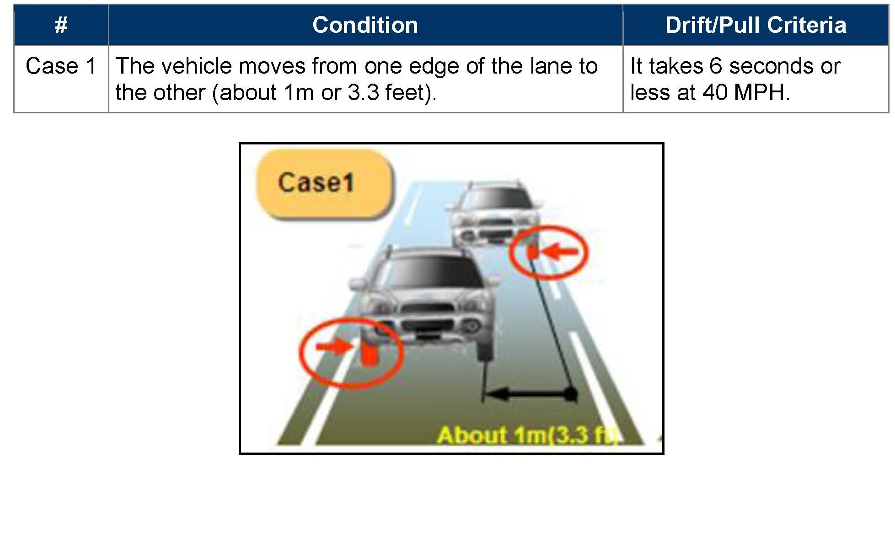
5. Take time measurements to see time how long it takes for the vehicle to move from one edge to the other edge (case 1), as shown. Use the conditions in the table below to confirm drifting or pulling condition.
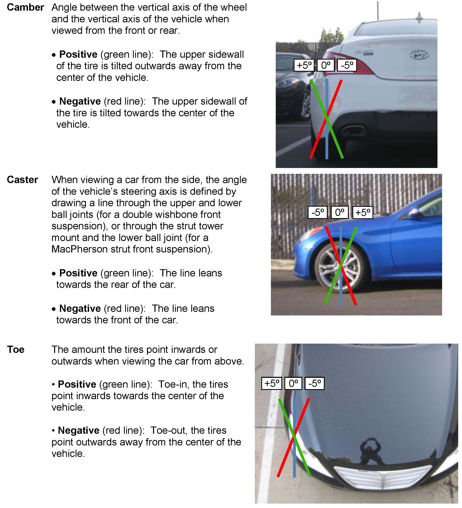
Alignment Angle Definitions
Factors that Influence Vehicle Drift/Pull
Vehicle drift or pull can be attributed to several factors. Understanding what can affect it is imperative for anyone repairing a vehicle with a drift or pull condition.
Air pressure - Low front tire pressure can cause a vehicle to drift or pull towards that tire.
Alignment
^ Camber - A vehicle will drift or pull towards the side with more positive front camber. As a rule of thumb, the camber difference between the front tires should be less than 0.5 degrees.
^ Caster - A vehicle will tend to drift or pull towards the side with less positive caster.
^ Steering Axis Inclination (SAI) - The angle formed by the line drawn through the steering pivot axis and a line at true vertical when viewed from the front of the vehicle. SAI is designed into a vehicle's suspension and aids straight-line stability. This angle can be measured by the alignment machine. For Hunter units, it is measured during the caster sweep process. It is useful for checking for damaged components when the SAI difference between left and right sides is more than 1 degree. If SAI is lower on one side of the vehicle it may indicate a bent lower control arm. If SAI is higher on one side of the vehicle it may indicate damage to the upper strut mount.
^ Thrust angle - This is the direction the rear axle is pointing as a result of the rear toe angles and results in the steering wheel being off-center. To avoid this situation, rear camber and toe should be adjusted before the front when performing a four wheel alignment. After the rear is set, center the steering wheel, lock it in place, then adjust the front camber, caster, and toe (if applicable).
Tires - Tires can have a significant effect on vehicle drift or pull. Arranging tires on a vehicle according to StraightTrak can help improve a vehicle drift or pull condition. Tires contribute to vehicle drift or pull in the following ways:
^ Ply steer - Ply steer is an inherent characteristic in a tire which results in a lateral force as the tire rolls. Rotating the tires may aid in cancelling out the effects of ply steer.
^ Conicity - Tire conicity refers to the shape of the tire, and how cone-shaped it is. This can influence vehicle drift or pull. Conicity can be present in a new tire due to manufacturing, or in a used tire due to camber wear.
Weight - The amount of weight and where the weight is placed alters a vehicle's alignment angles, thus changing the drift/pull tendency. It is important to consider this when diagnosing a vehicle drift or pull.
Road Crown - Every vehicle will have a tendency to follow road crown towards the low side of the crown.
Brake Drag - If one side of a vehicle's brakes are dragging, the vehicle can have a drift or pull tendency towards that side. Inspect the brake system to ensure brake drag is kept to a minimum on all four wheels.
Cross Winds - Cross winds can push a vehicle towards one side of the road. It is important to conduct road testing by driving a vehicle in opposite directions to verify the effects of cross winds.
Proper Alignment Rack Usage and Maintenance
NOTE
^ These tips apply to Hunter Engineering alignment racks and wheel balancers that feature StraightTrak.
^ It is imperative that the following items be followed to ensure accurate alignment readings.
Aligner Calibration/Maintenance Schedule - It is required that all dealer alignment racks be calibrated by a representative every 6 months. This allows the representative to update vehicle specs and inspect and maintain equipment.
Rolling Compensation - The rolling compensation procedure is critical to ensuring an accurate alignment. When performing the rolling compensation, be sure to do the following:
1. Set tire pressure to factory specification.
2. Verify that the vehicle is not excessively loaded. Remove any heavy items.
3. Ensure the lift is level so vehicle's suspension and steering are in a neutral position.
4. Set the target levels before rolling compensation. After completing the compensation, do not re-level the targets.
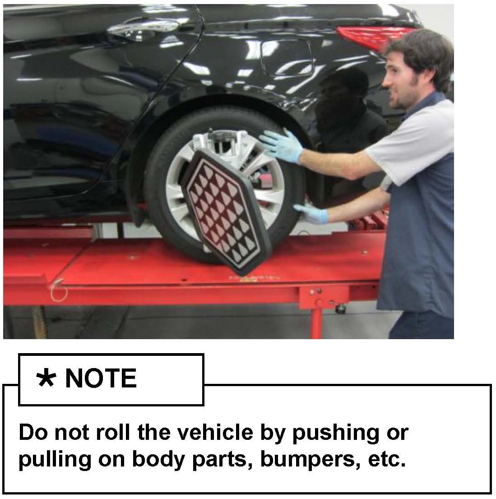
Roll the vehicle by turning the left rear tire. This will not disturb the vehicle's suspension and steering systems.
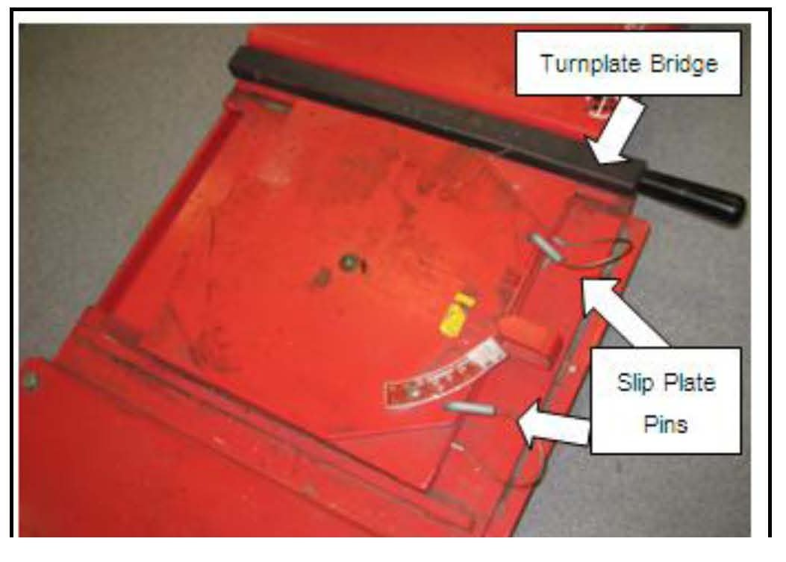
Ensure the pins are in the slip plates, and the turnplate bridge is flush with the rolling surface to minimize the vehicle's suspension movement.
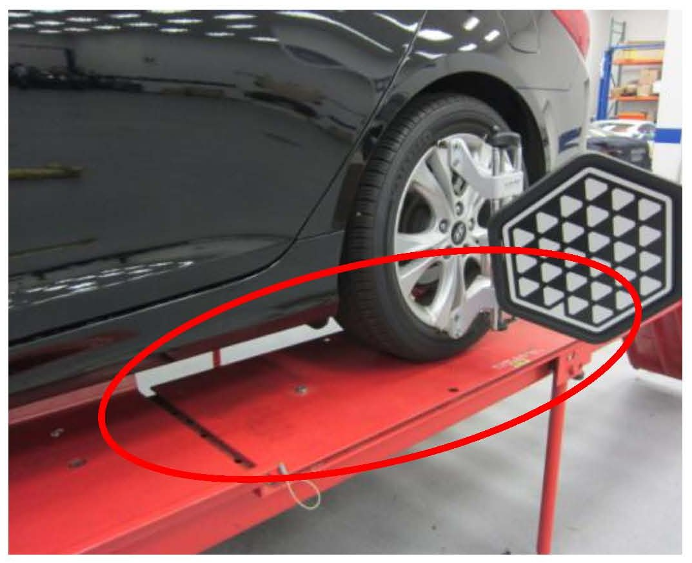
Slip Plates - The slip plates of a Hunter alignment rack are designed to move smoothly and freely to provide accurate measurements. Before pulling a vehicle onto the rack, check that they move freely and do not bind. Periodically clean the area underneath the slip plates by blowing compressed air through to remove any debris. If this does not free a binding plate, contact your local Hunter representative for cleaning and lubrication recommendations.
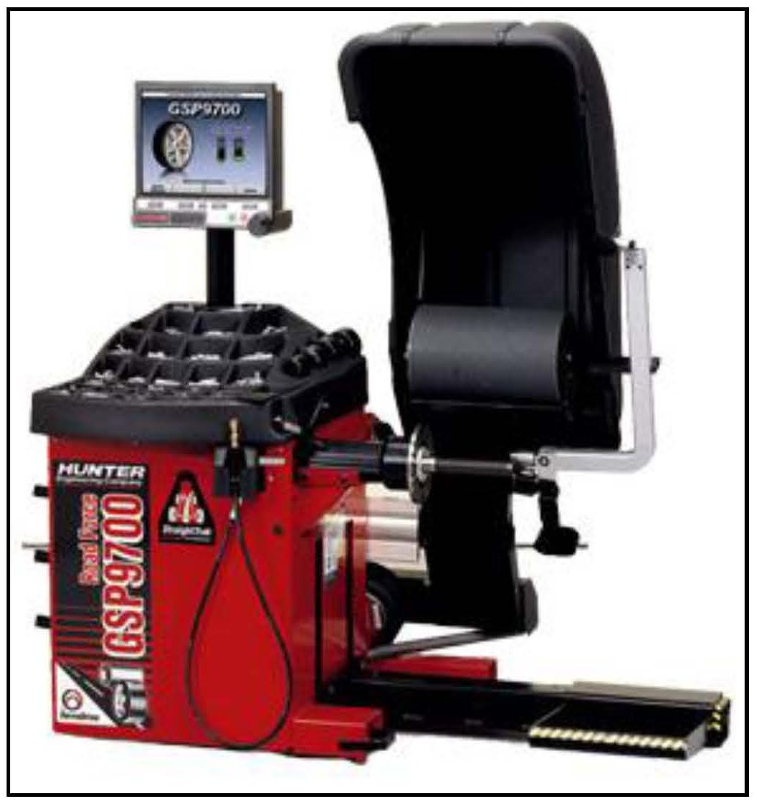
StraightTrak LFM feature - StraightTrak is a required feature for Hunter's GSP9700 wheel balancer. This feature measures lateral force of a tire due to ply steer, conicity, and other issues which may contribute to vehicle drift or pull. This can be a useful tool for vehicles with a tracking condition.
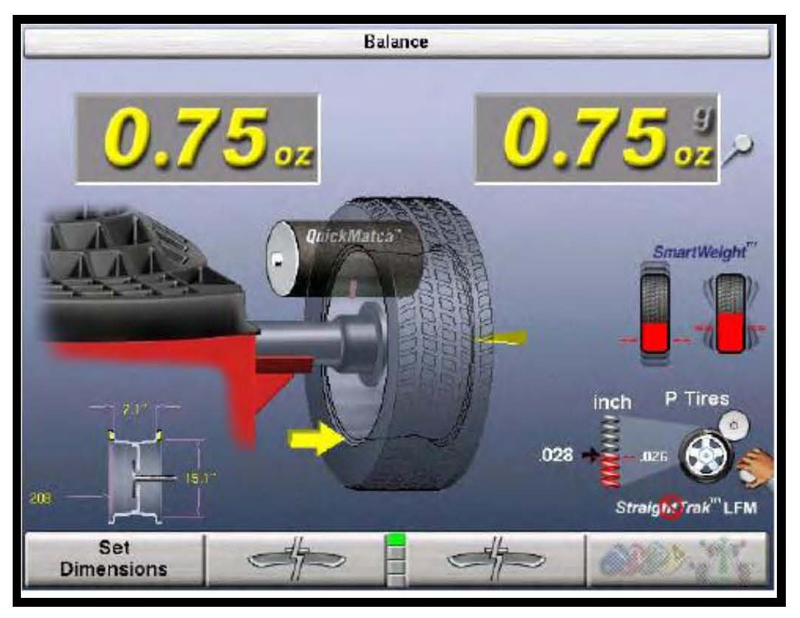
Use StraightTrak to arrange the 4 wheel/tire assemblies of a vehicle in a configuration which will result in the lowest drifting or pulling force by doing the following:
1. Remove all wheel/tire assemblies from the vehicle.
2. Balance the front left assembly on the Hunter GSP9700 with StraightTrak feature. An icon located in the lower right corner will show whether or not StraightTrak is enabled.
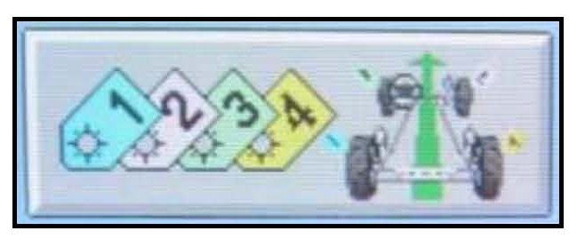
3. After balancing, press the tire tag button located at the bottom right of the screen to assign a number to that assembly. Label the assembly accordingly with a tag or chalk mark.
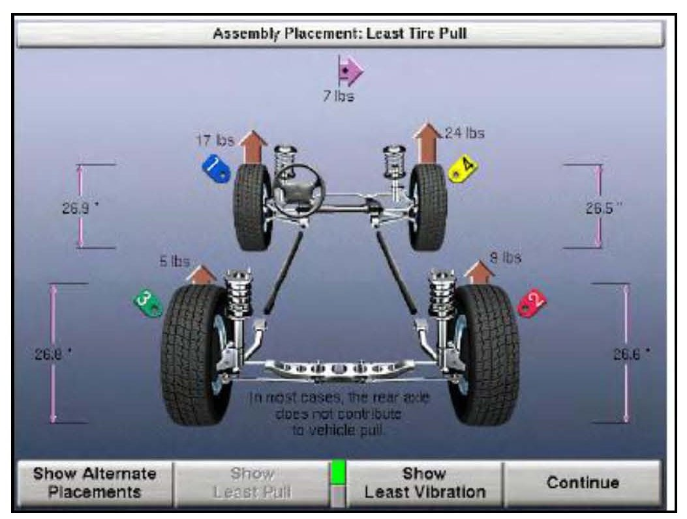
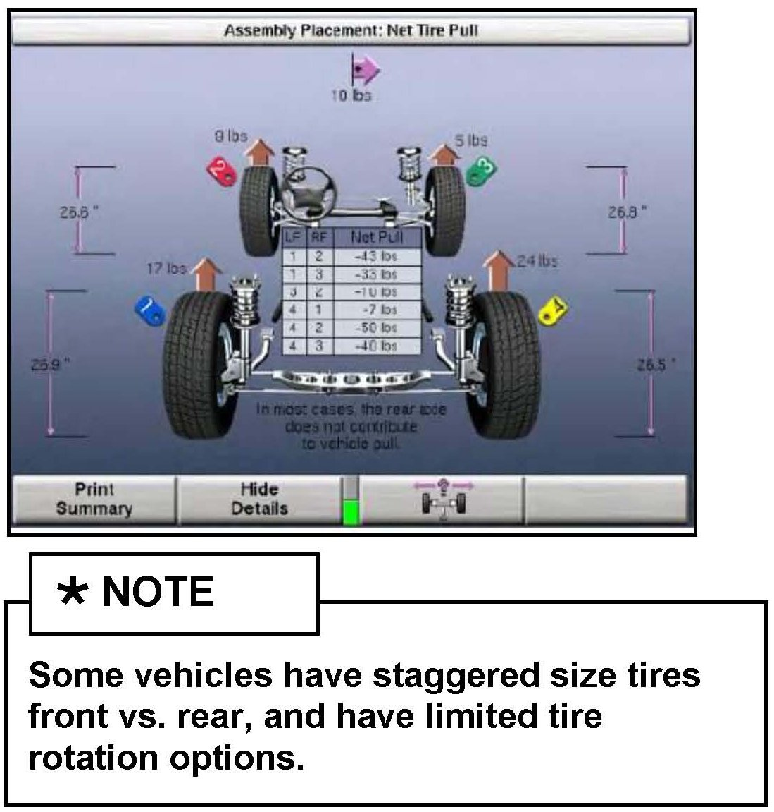
4. Continue to balance and tag all four assemblies. After all are completed, the screen will show tire positioning and the effect on vehicle drift/pull or vibration. The purple horizontal arrow at the top of the screen shows overall pulling force and direction due to tires. The brown vertical arrows above each tire show the RFV of each assembly.
^ Select "Show Least Pull for lowest tire effects on pulling.
^ Select "Show Least Vibration for the smoothest ride.
^ Select "Show Alternate Placements for other configurations.
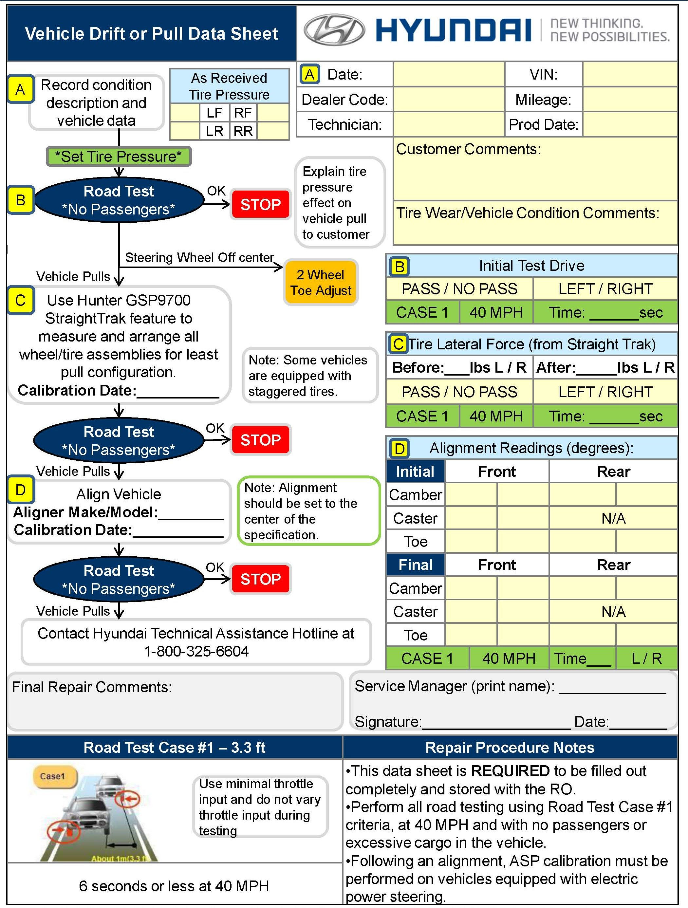
***THIS DATA SHEET IS REQUIRED TO BE COMPLETED AND STORED WITH THE RO FOR ALL TRACKING CLAIMS***